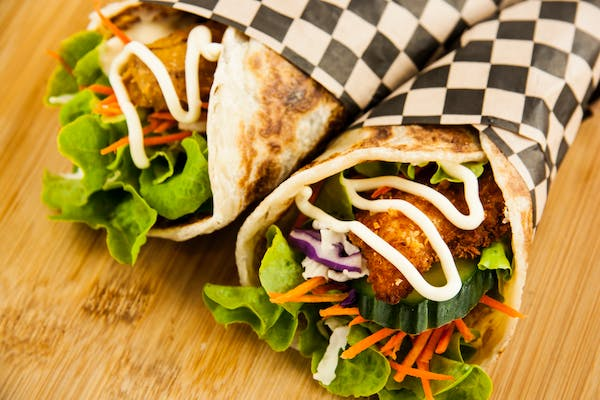
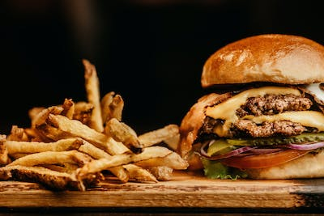
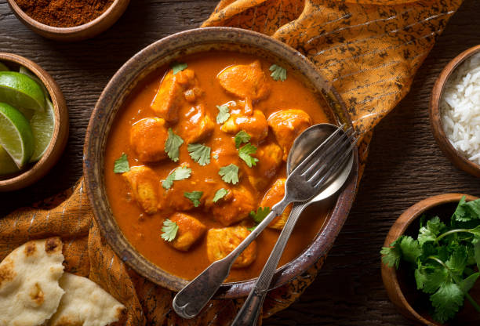
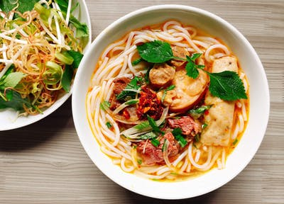

Chicken Momos are also a traditional dish of Nepali cuisine and resemble Chinese Bao. However, it differs
a lot from the Indian chicken momos.
Shawarma

Shawarma is a popular Middle Eastern dish that originated in the Ottoman Empire, consisting of meat cut
into thin slices, stacked in a cone-like shape.
Sandwich
A sandwich is a food typically consisting of vegetables, sliced cheese or meat, placed on or between
slices of bread.
Pasta
Pasta is a type of food typically made from an unleavened dough of wheat flour mixed with water or eggs,
and formed into sheets or other shapes.
Burger

A hamburger, or simply burger, is a food consisting of fillings usually a patty of ground meat, typically beef placed inside a sliced bun or bread roll.
Chicken Biryani
Chicken biryani is a mixed rice dish originating among the Muslims of the Indian subcontinent as a variety of
Persian pilaf.
Butter Chicken

Butter Chicken also known as Chicken Makhani is a classic Indian dish where grilled chicken (Tandoori chicken) is simmered in a spicy, aromatic.
Noodles

Noodles are a type of food made from unleavened dough which is either rolled flat and cut, stretched, or extruded, into long strips or strings.